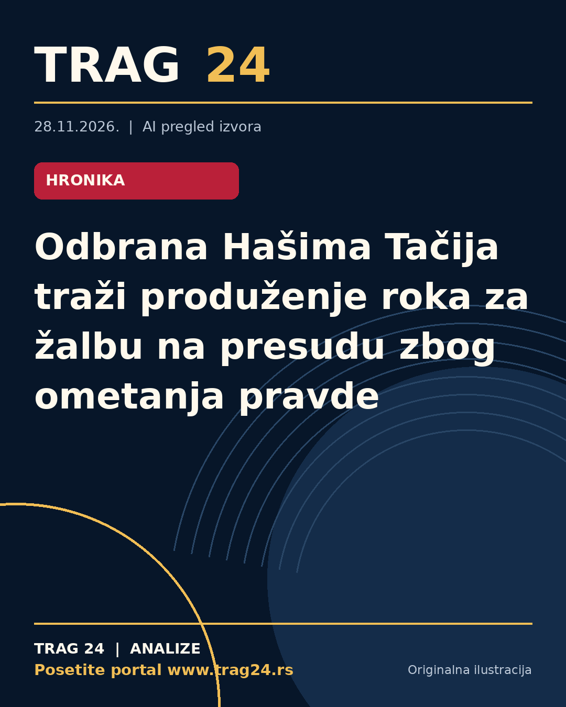

Odbrana Hašima Tačija traži produženje roka za žalbu na presudu zbog ometanja pravde

ŠTA SE DOGODILO
Odbrana Hašima Tačija zatražila je od Specijalizovanih već u Hagu produženje roka za podnošenje žalbe na presudu kojom je Tači osuđen na 17 meseci zatvora zbog ometanja pravde. Zahtjev za produženje roka do 18. januara 2027. godine podnela je advokat Sofi Menegon 25. novembra. Presuda je izrečena 17. novembra i sadrži 399 stranica, a rok za žalbu ističe 17. decembra.
HRONOLOGIJA
Hašim Tači, bivši vođa Oslobodilačke vojske Kosova, u pritvoru je u Hagu od novembra 2020. godine. U predmetu za ometanje pravde osuđen je 17. novembra 2026. na 17 meseci zatvora zbog ometanja službenih lica, kršenja tajnosti postupka i nepoštovanja suda. Ova presuda usledila je nakon što je Tači 16. septembra istog godine prvostepeno osuđen na 25 godina zatvora zbog ratnih zločina. Pored njega, osuđeni su i drugi bivši vođe OVK. Rok za žalbu na presudu o ometanju pravde je 17. decembra 2026. godine.
ŠTA NAVODE IZVORI
Odbrana navodi više razloga za produženje roka: obim i složenost presude, koja je velika i sadrži nove pravne i činjenične kompleksnosti; pitanja tumačenja zakona privremenih institucija u Prištini, uključujući krivična dela i odgovornosti; nova pravna pitanja o izvršenju kazni i računanju vremena pritvora za optužnice po različitim predmetima; činjenicu da presuda nije prevedena na albanski jezik; i da rok za žalbu pada neposredno pred zimsku pauzu suda, što ograničava kapacitete odbrane. Navodi se da su ovi pravni problemi od posebnog značaja zbog Tačijeve druge presude za ratne zločine.
ŠTA JE POTVRĐENO
Presuda od 17 meseci zatvora Tiči je potvrđena od strane Specijalizovanih veća u Hagu zbog krivičnih dela ometanja službenih lica, povrede tajnosti postupka i nepoštovanja suda. Tači je takođe prvostepeno osuđen na 25 godina zatvora za ratne zločine počinjene tokom sukoba na Kosovu. Četvorica drugih optuženih su dobila kazne zatvora u rasponu od uslovne do 25 godina, dok je jedan oslobođen optužbi za pokušaj ometanja pravde. Presuda o ometanju pravde sadržana je u odluci od 17. novembra 2026., a reakcije suda i advokata potvrđuju značaj složenosti pitanja.
ŠTA NIJE POTVRĐENO
Nije potvrđeno da li će sud prihvatiti zahtev odbrane za produženje roka za žalbu. Takođe, nema potvrda o ishodu žalbenog postupka koji treba da usledi, niti o eventualnim promenama presude u predmetu ometanja pravde.
ŠTA OSTАJE OTVORENO: Ostanak roka za žalbu i eventualni ishod žalbenog postupka su neizvesni. Takođe je nejasno na koji način će sud evaluirati nova pravna pitanja koja je odbrana istakla u zahtevu. Dalje će biti važno pratiti da li će prevod presude na albanski jezik biti završen pre roka za žalbu i kako će pravne nijanse uticati na konačni sudski epilog.
Izvori
- https://www.blic.rs/vesti/politika/odbrana-tacija-trazi-produzenje-roka-za-zalbu-na-presudu-u-slucaju-ometanja-pravde/xcrxj7v
- https://insajder.net/prenosimo/odbrana-tacija-trazi-produzenje-roka-za-zalbu-na-presudu-u-slucaju-ometanja-pravde
- https://www.b92.net/info/kosovo/288786/odbrana-tacija-trazi-produzenje-roka-za-zalbu-na-presudu-u-slucaju-ometanja-pravde/vest
Ova analiza je pripremljena uz pomoć veštačke inteligencije na osnovu javno dostupnih izvora. Navodi izvora nisu nužno nezavisno potvrđeni.